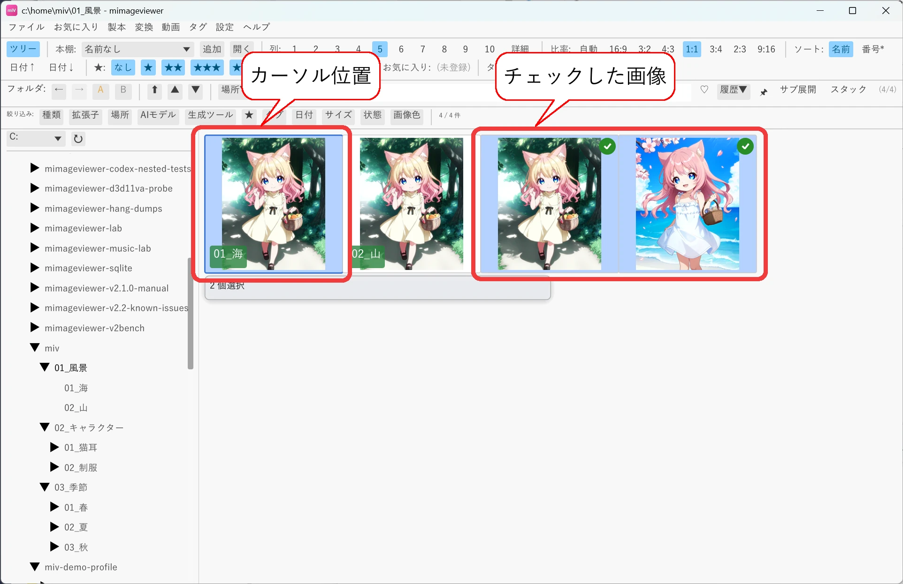
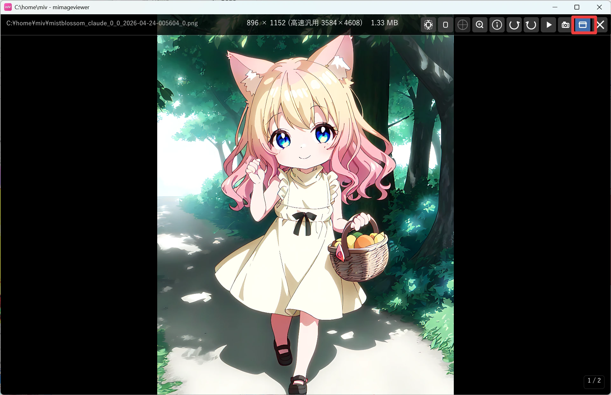

はじめての 10 分
初めて mImageViewer を開いた方向けに、フォルダを開いてから画像を 1 枚見て、 またフォルダ一覧に戻ってくるまでの一連の流れをまとめました。 ここに出てくる操作だけ覚えれば、あとの機能は使いたくなったときにチュートリアル一覧から拾えば十分です。
全体の流れ
- フォルダを開く
- サムネイル一覧（グリッド表示）を眺める
- 青いハイライトの「カーソル位置」と Space の「チェック」の違いを知る
- Enter で画像をフルスクリーン表示する
- 矢印キーで次のページ・次のファイルへ進む
- Esc でフルスクリーンを抜け、BS で親フォルダへ戻る
1. フォルダを開く
見たい画像の入ったフォルダを開きます。ふだんは画面上部のフォルダバーを使うのが一番手軽です。
- フォルダバーにフォルダのパスを入力して Enter（空欄のまま Enter を押すとドライブ一覧が出ます）
- パスが分からなければ、フォルダバーの 場所▼ →「ドライブ一覧」からたどっていく
フォルダを開くと画像ファイルのサムネイルが一覧表示されます。2 回目以降の起動時は、 既定では前回表示していた場所が自動的に復元されるので、毎回パスを入力し直す必要はありません（この動作は環境設定で変更できます）。

2. サムネイル一覧（グリッド表示）を眺める
フォルダ・ZIP・PDF などは先頭のブロックに、画像・動画・音声ファイルはその後のブロックに、 それぞれサムネイル付きのタイルとして並びます。サブフォルダはダブルクリックで中に入れます。
3. 「カーソル位置」と「チェック」の違い
mImageViewer には見た目が似ている 2 つの選び方があるので、最初に区別しておくと迷いません。
- カーソル位置（青いハイライト）：サムネイルをクリックすると、その 1 つが「今の位置」になります。矢印キーでカーソルのように移動します。
- チェック（複数を対象）：Ctrl+クリック、または Space キーでチェックを ON/OFF します。Shift+矢印キーで範囲をまとめてチェックできます。
「今どれを見ているか」を示すのがカーソル位置、「複数まとめて操作したいものに印を付ける」のがチェック、 という役割分担です。コピーや削除などのファイル操作は、チェックしたアイテムがあればそちらが優先されます。

4. Enter で画像をフルスクリーン表示する
見たい画像にカーソルを合わせて Enter を押すか、サムネイルをダブルクリックすると、 フルスクリーン表示に切り替わります。
上部にマウスを近づけるとホバーバーが現れます。その右端（× の左）にある ウィンドウ表示切り替えボタン、または F11 キーで、全画面表示とウィンドウ内表示を切り替えられます。 ほかのアプリと画面を並べて見たいときに便利です。

5. 矢印キーで次のページ・次のファイルへ進む
フルスクリーン表示中は、矢印キーで前後のファイル（複数ページの本なら次のページ）へ移動できます。
| キー | 動作 |
|---|---|
| → / ↓ | 次の画像へ |
| ← / ↑ | 前の画像へ |
| マウスホイール | 下で次の画像へ、上で前の画像へ |
| 画面の右半分 / 左半分をクリック | 次の画像 / 前の画像へ |
前後の画像はバックグラウンドで先読みされるため、キーを連打してもスムーズに切り替わります。
6. Esc でフルスクリーンを抜け、BS で親フォルダへ戻る
一通り見終わったら、フルスクリーンからグリッド表示へ戻り、必要なら 1 つ上のフォルダへ移動します。
| キー | 動作 |
|---|---|
| Esc | フルスクリーンを抜けてグリッド表示に戻ります。今見ていた画像にカーソルが戻った状態になります |
| BS（Backspace） | グリッド表示で押すと親フォルダへ移動します。フルスクリーン中に押すとフルスクリーンを 1 段閉じてグリッド表示に戻ります |